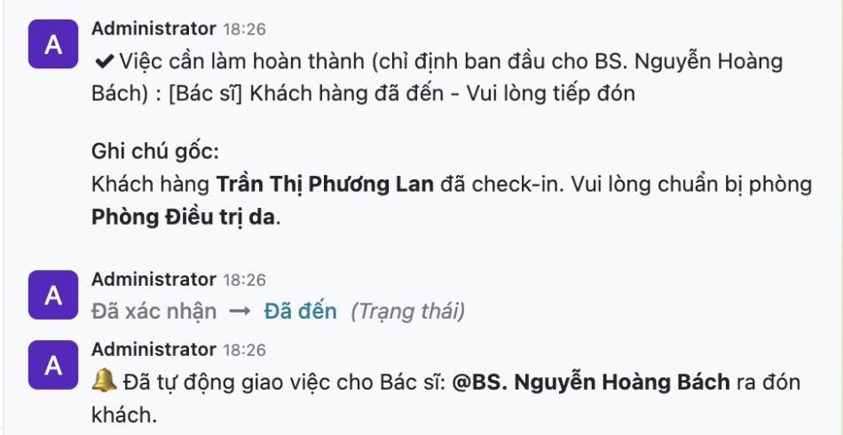

Digitalizing and automating core workflows to resolve resource conflicts, unify data, and enhance patient experience in a dermatology clinic.
The HT Beauty project aimed to modernize a dermatology clinic suffering from fragmented data (using Zalo, Excel, and paper), severe resource overlapping (double-booking), and passive customer care.
Our team implemented a tailored Odoo ERP solution. We conducted a deep AS-IS analysis identifying 46 operational GAPs, designing a TO-BE system architecture that balanced out-of-the-box features with heavy customizations (42%) to support smart multi-resource scheduling and automated CRM funnels.
Conducted AS-IS process analysis to document pain points, extracting 46 operational GAPs and defining 33 core Functional Requirements.
Designed TO-BE workflows using BPMN diagrams, UML (Use Case, Sequence), and Entity-Relationship Diagrams (ERD) for electronic medical records.
Proposed a hybrid ERP architecture consisting of 36% Standard features, 21% Configuration, and 42% Customization to meet strict medical logic.
Collaborated with developers to implement a 4-tier Conflict Validation algorithm and Cron Jobs for automated customer follow-ups.
Business analysis artifacts developed throughout the Software Development Life Cycle (SDLC), demonstrating how business needs are translated into structured documentation, optimized processes, and implementation-ready solutions.
Business Goals • Stakeholder Needs • GAP Analysis
Captures business objectives, stakeholder expectations, AS-IS assessment, operational pain points, project scope, and prioritized business requirements to establish a clear project foundation before solution design.
AS-IS • TO-BE • BPMN 2.0
Documents end-to-end business workflows using BPMN 2.0, including current-state analysis, future-state process redesign, business rules, exception handling, and operational improvement opportunities.
Functional Specs • Use Cases • Acceptance Criteria
Defines detailed functional requirements, user interactions, validation rules, business logic, exception scenarios, and acceptance criteria to support accurate system development.
ERD • DFD • Data Dictionary
Models business data structures and system interactions through Entity-Relationship Diagrams, Data Flow Diagrams, and system analysis artifacts to support solution architecture and implementation.
File in preparationUser Flow • Low-Fi • High-Fi
Illustrates user journeys and interface concepts through wireframes and interactive prototypes to validate business requirements before development.
File in preparationTest Cases • UAT • Bug Reports
Documents business validation activities including User Acceptance Testing, test scenarios, defect tracking, and final business sign-off before deployment.
File in preparationHow we solved the most critical business bottlenecks through systemic thinking and custom development.
The Problem: Receptionists manually tracked beds and doctors, leading to severe double-booking and poor customer experience.
The Solution: Designed a 4-tier validation algorithm (using Python @api.constrains). The system now automatically scans resources and immediately blocks any attempt to book an overlapping doctor or a fully occupied treatment room, triggering a UI validation error.
The Problem: Leads from the website were lost due to manual data entry into Google Sheets.
The Solution: Engineered an automated CRM funnel. Data from the website controller synchronizes in real-time to the Odoo Kanban board. Implemented a Deduplication mechanism to automatically merge returning customers based on Phone/Email, preventing duplicate work for Telesales.
The Problem: Tracking post-treatment care (T+1, T+3 days) was entirely dependent on human memory.
The Solution: Automated the treatment lifecycle. The moment a technician clicks "Complete" on a session, the system deducts the remaining sessions and instantly generates scheduled Activities (Tasks) for Customer Service to follow up, ensuring 100% SLA compliance.

Double-booking Conflicts Resolved
Process GAPs Addressed
Reduction in Manual Data Entry Errors
Significantly Reduced No-show Rates